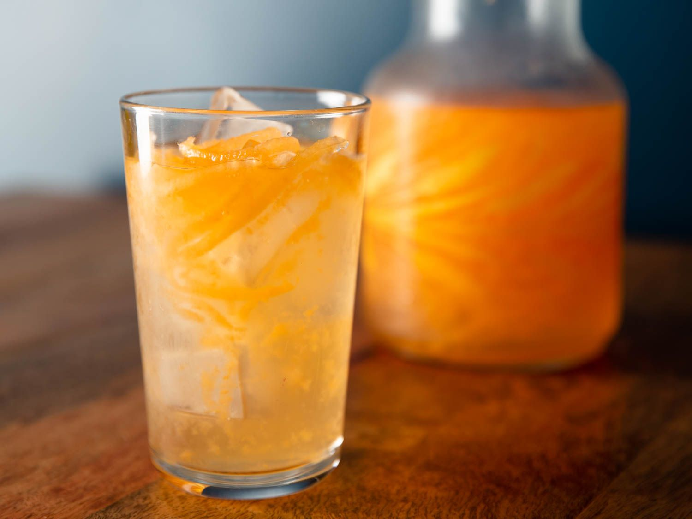
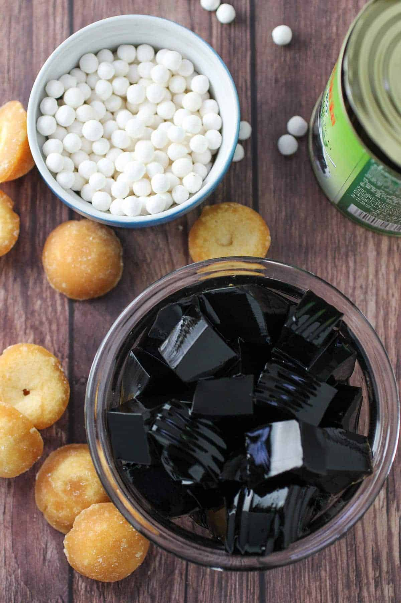
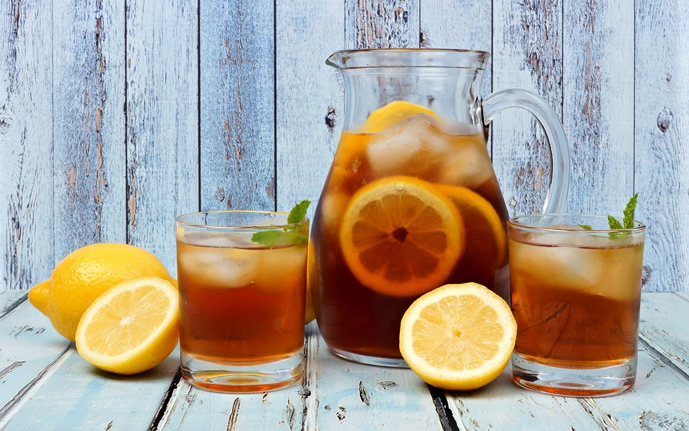
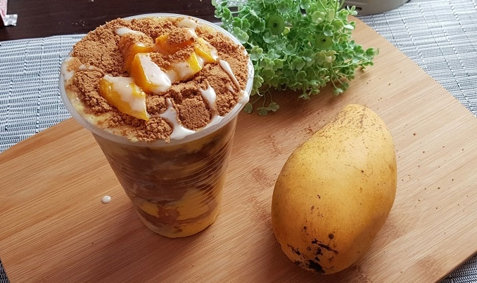
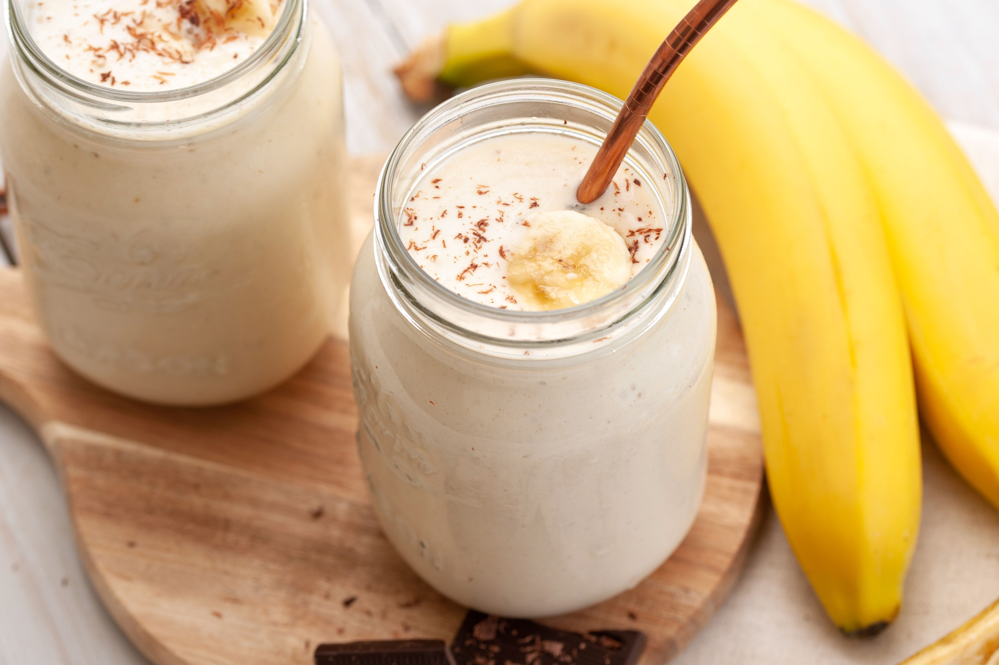
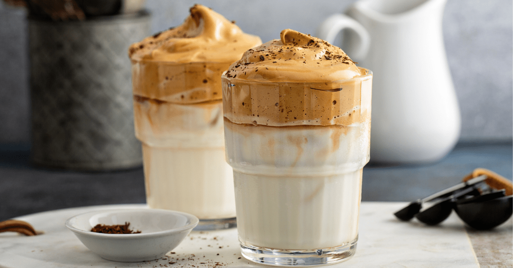
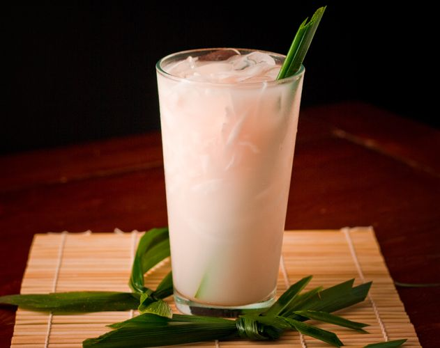

Beverages





Banana Yogurt Smoothie
A banana smoothie with yogurt is the perfect base if you’re someone who loves a protein shake in the morning. Add the required amount of protein powder to this smoothie recipe, and it should work out pretty well. You may need to alter the amount of milk if it is too thick or too runny.


